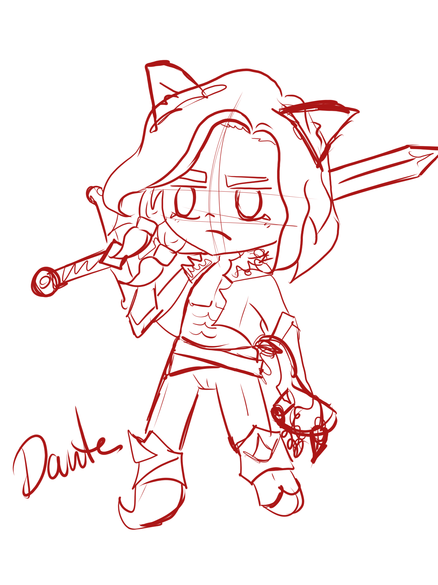

Historia
Darky, más conocido como el malvado felino, trata de apoderarse de todas las aldeas.
Jade la protagonista del juego y princesa de las aldeas lucha por derrotar a Darky, por ello recorrerá un largo camino pasando por todas las aldeas. Ella sabe de la existencia de las gemas del poder y cuando descubre que Darky ha derrotado a todas las aldeas y está secuestrando a todos los aldeanos, coge su gema y se dirige a las demás aldeas para conseguir el resto, las cuales Darky pudo conseguir, ya que la profecía dice que solo la familia real puede hacerse con ellas: una arquera, un espadachín, un mercenario y un mago son los guardianes de las gemas
Jade irá en su búsqueda para pedirles que se unan a ella. Cuando Jade se haga con las gemas de todas las aldeas irá al tenebroso castillo de Darky y se enfrentará a él para liberar a todos los aldeanos secuestrados y así recuperar la libertad y armonía.
Personajes
Jade
El la protagonista y princesa de las aldeas.Es una hechicera unicornio.Tras perder a toda su familia, se enfrentará a Darky. Solo ella puede salvar el reino.Es la guardiana de la gema Amara.

Darky
Aunque su apariencia es adorable,no te dejes engañar.Su misión es convertir a todo el reino es sus súbditos y conseguir todos las gemas para ser el más poderoso.

Dante
Es un valiente espadachín y guardián de la gema Lycora. Será el primero en unirse a Jade para luchar contra Darky.

Hazel
Juró proteger la gema elfira y tras perder a todas sus compañeras arqueras, se enfrentará a Darky para hacer justicia.

Andor
Daría su vida por salvar a su aldea.Su abuelo y su padre fueron guardianes de la gema Vicara y ahora es su turno.